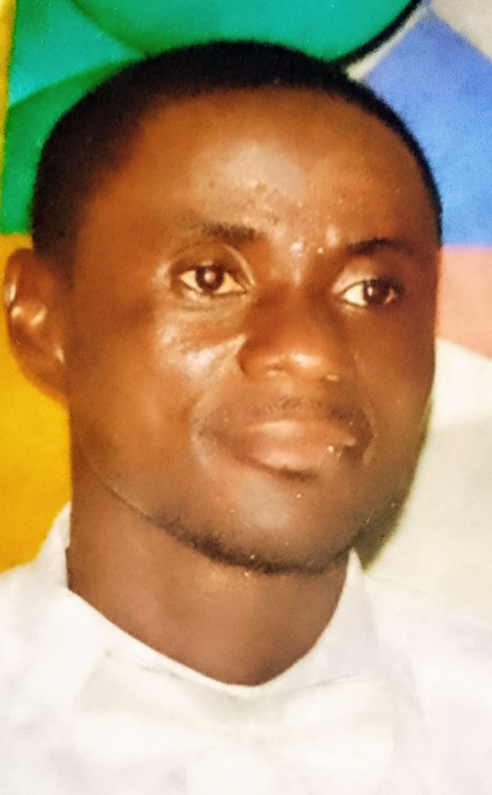

Hon. Noko Benjamin Harmon
A New Voice For A New River Cess
Dedicated public servant with a vision to transform River Cess County through inclusive governance, economic development, and agricultural innovation.
With years of experience serving the community, I understand the challenges facing our county and have developed practical solutions to address them.
My commitment is to bring transparent, accountable, and people-centered leadership to River Cess, ensuring every citizen has the opportunity to thrive.
My Platform for River Cess
Agricultural First
Revolutionizing River Cess agriculture through modern farming techniques, improved access to markets, and support for local farmers. We will invest in agricultural infrastructure and create cooperatives.
Economic Empowerment
Creating sustainable economic opportunities through job creation, skills development, and support for small businesses. We will establish microfinance programs and vocational training centers.
Humanizing Politics
Bringing people-centered governance to River Cess with transparency, accountability, and community engagement. I commit to regular town hall meetings and responsive representation.
Education & Youth
Investing in the future through improved educational facilities, teacher training, and youth empowerment programs. We will establish scholarships and after-school programs.
Healthcare Access
Improving healthcare infrastructure and access to medical services across River Cess. We will work to ensure every community has access to basic healthcare and maternal services.
Infrastructure
Developing and maintaining critical infrastructure including roads, bridges, water systems, and electricity to support economic growth and improve quality of life.
Join Our Movement for Change
Together, we can build a better River Cess for everyone. Your support matters.
Get Involved Today